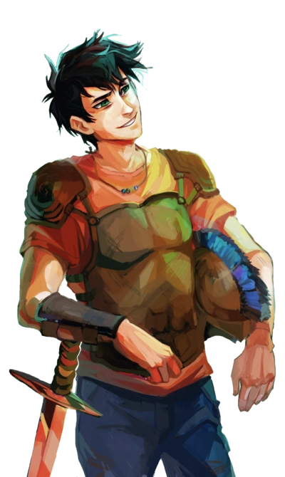

Quem é?
Perseus "Percy" Jackson nasceu em Nova York e cresceu sem saber sobre sua verdadeira origem divina. Aos doze anos, descobriu que é um semideus e foi levado para o Acampamento Meio-Sangue, onde passou a treinar para sobreviver a monstros mitológicos e cumprir profecias ao lado de seus amigos, como Annabeth Chase e Grover Underwood.
Aparência
Percy possui traços mediterrâneos e um porte atlético, resultado de anos de treinamento intenso com espadas e batalhas constantes. Ele tem cabelos pretos, quase sempre bagunçados, e olhos de um tom verde-mar marcante, característicos de sua linhagem ligada a Poseidon. Na fase mais avançada dos livros, atinge cerca de 1,82 metro de altura e costuma usar roupas casuais, como jeans e a tradicional camiseta laranja do Acampamento Meio-Sangue.
Personalidade
A personalidade de Percy é marcada por uma lealdade extrema, considerada tanto sua maior virtude quanto seu defeito fatal, pois ele estaria disposto a sacrificar o mundo inteiro para salvar alguém que ama. Ele é um líder nato, corajoso e movido por um forte senso de justiça, muitas vezes desafiando a autoridade dos próprios deuses quando sente que algo é errado. Mesmo diante de perigos mortais, mantém um senso de humor sarcástico e descontraído, além de lidar diariamente com o TDAH e a dislexia, características naturais de seu cérebro de semideus programado para o combate e para a leitura do grego antigo.